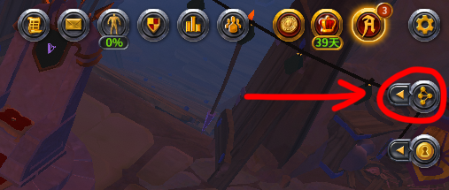
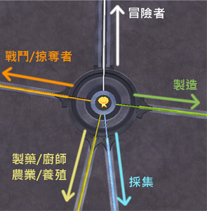
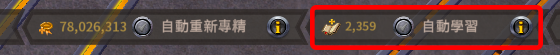
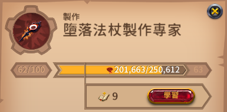

天賦羅盤
天賦羅盤的介面內容，以及各種天賦節點升級所需的聲望量。
開啟天賦羅盤
遊戲視窗右上角，點擊紅圈圈起來的按鈕，會進到天賦羅盤介面。
節點類型
| 冒險者 (白色) |
要解鎖指定的階級，才能使用不高於該階級的坐騎、披風、破壞槌。 例如我達到宗師級冒險者，我就能使用T7及以下的坐騎、披風。 每解鎖一個節點會獲得一個頭像。 |
||||||||||||||||||
| 掠奪者 (橘色) |
要解鎖指定的階級，才能對不高於該階級的怪物增加傷害和對自己減傷。 等壓機制，如果沒有達到，越級打怪會非常困難。 |
||||||||||||||||||
| 戰鬥 (橘色) |
與PvE和PvP有關。 由內向外有三圈：
|
||||||||||||||||||
| 製藥/廚師 農業/養殖 (黃色) |
與製造藥水、食物以及種菜、養動物有關。 跟戰鬥一樣由內向外有三圈：
|
自動學習

編輯紀錄
作者: runnywolf
最後編輯日期: 2023/06/12